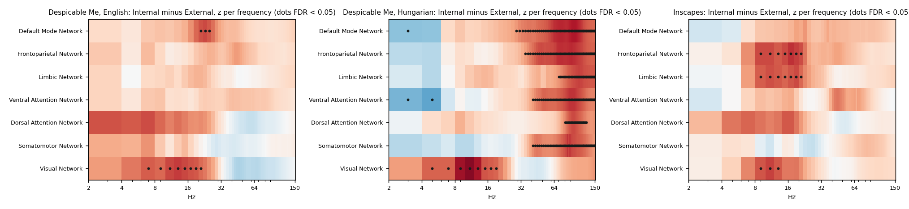
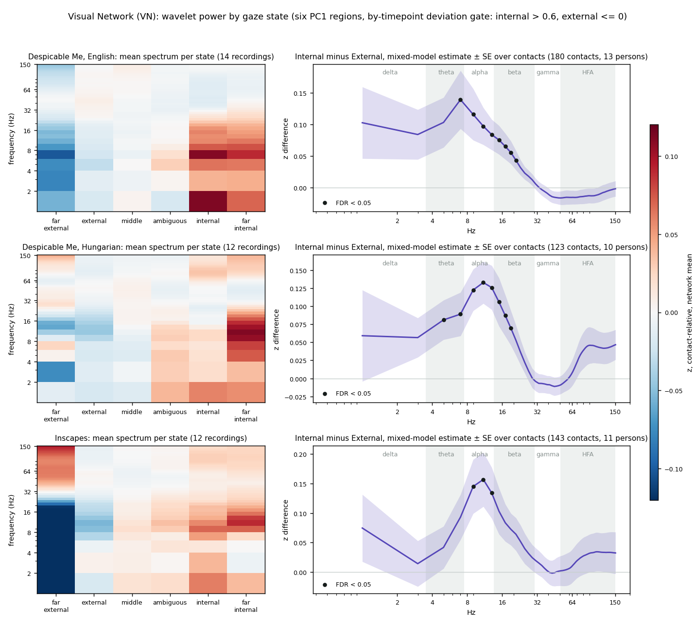
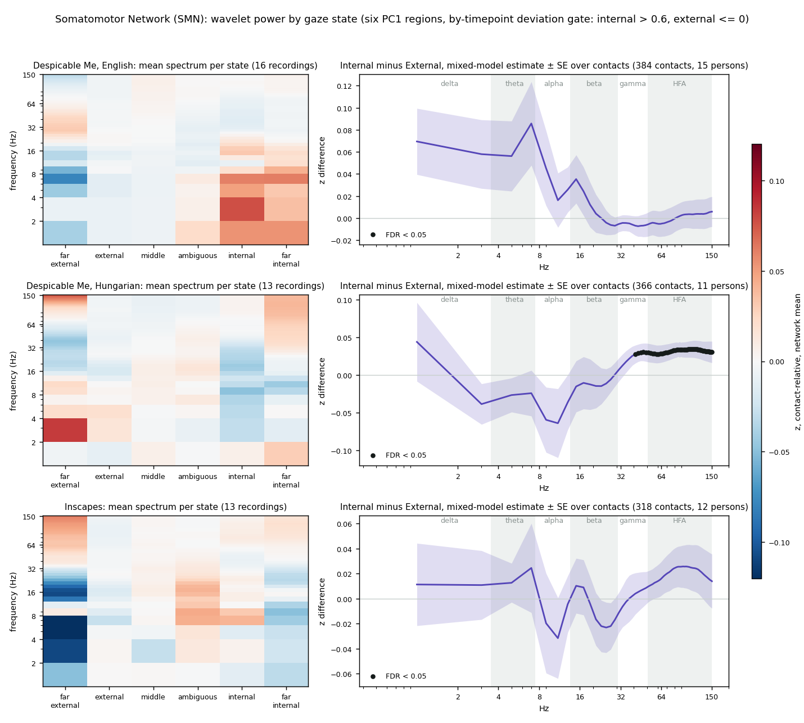
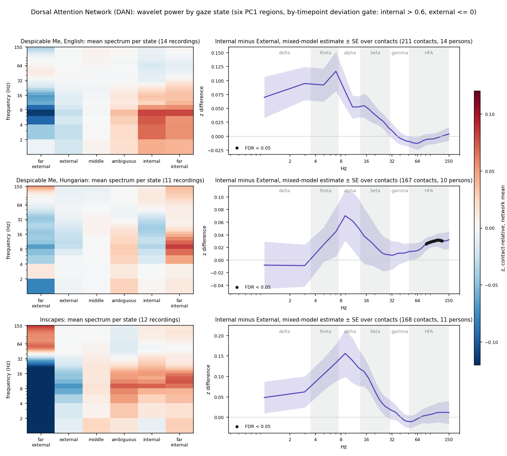
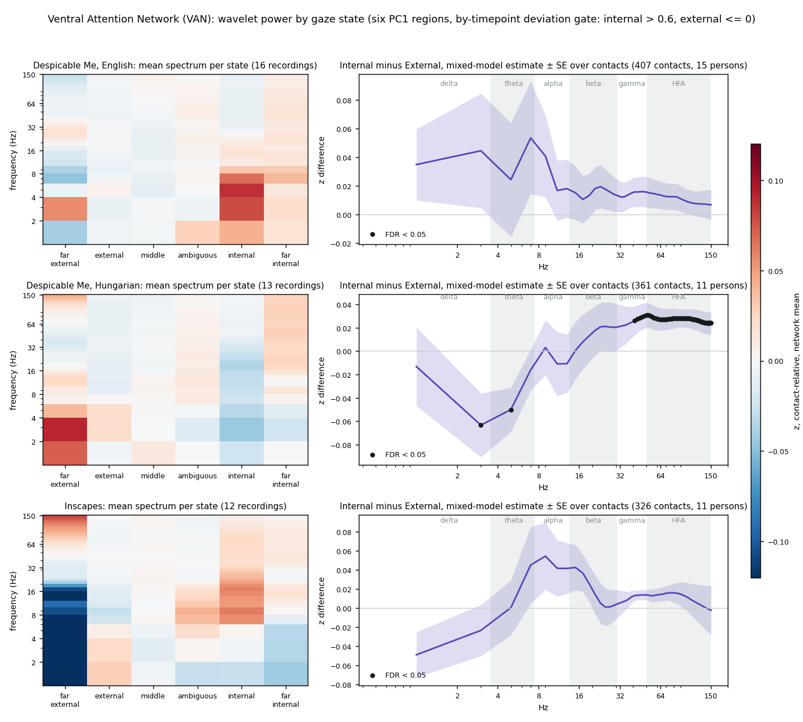
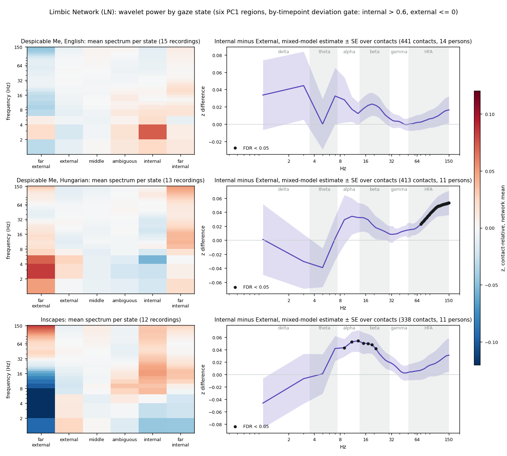
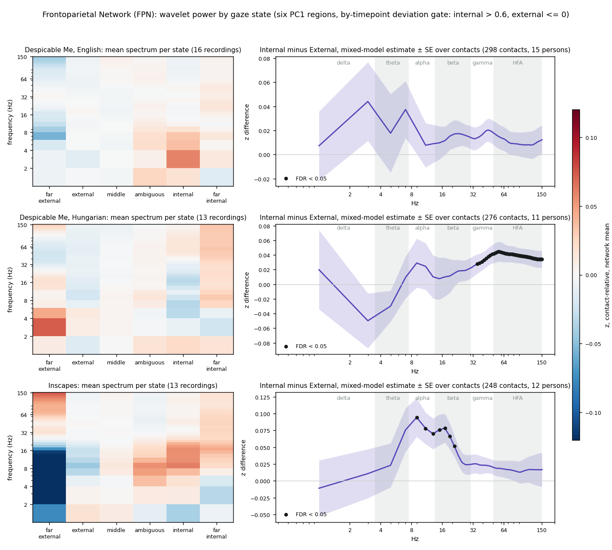
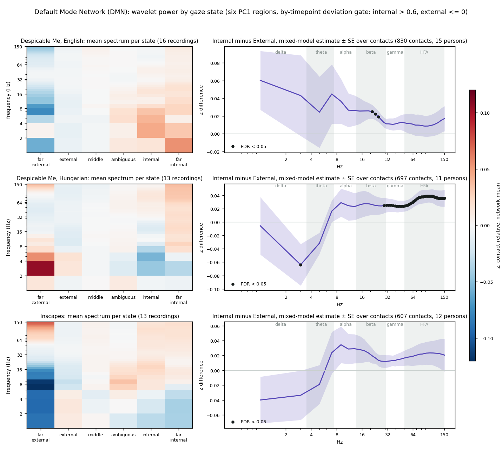

attn_explore_14Sep26 · companion page
Wavelet power spectra for each Yeo-7 network by gaze state, and the Internal minus External contrast by frequency, using the states defined in the Attention State Exploration Log.
Time is collapsed: for each network the left panel is a heatmap of the mean spectrum in each of the six gaze states, frequency on the y axis and state on the x axis from far external to far internal, and the right panel is the Internal minus External contrast at every frequency, where Internal pools the internal and far-internal regions and External pools the external and far-external regions. The summary figure below it shows the same contrast for all seven networks at once.
States are the six PC1 regions, cut on within-viewer PC1 z at -1.5, -0.4, 0.4, 0.8 and 1.2, with the by-timepoint deviation gate at both ends: the two internal regions keep only windows whose deviation z across viewers at that scene is above 0.6, and the two external regions keep only windows at or below 0. Windows failing a gate are dropped. Each contact's spectrum is robust-z-scored against its own recording and centred on its own mean over all good windows, so the heatmap shows departure from the contact's average at each frequency, averaged over the network's contacts and then over recordings. The contrast is a mixed model per frequency on the per-contact Internal minus External difference with a person random intercept; dots mark frequencies significant after FDR over the 76 frequencies within network and film.
Recordings are the pipeline's neural inclusion list, the same 42 the power contrasts use: 16 English, 13 Hungarian, 13 Inscapes. The colour range is ±0.12 z; values beyond it saturate.







